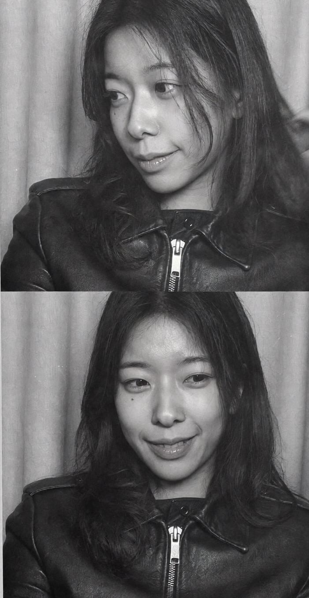

Jungwoo Rhee
HCI researcher building XR and AI interfaces grounded in the physical world, so people and systems can refer to the same things.
Currently:
Daejeon, KR

About
I'm a second-year PhD student in Industrial Design (HCI) at KAIST, advised by Prof. Andrea Bianchi. I build XR and AI interfaces grounded in the physical world, so people and systems can refer to the same things.
Grounding conversation in physical context. AI assistants and multimodal input that know which part you mean when you say “this” (Wire Your Way, Gaze & Speech). Interfaces that fit the room. Tools for designing XR interfaces that respond to distance, light, and occlusion (AdapTest).
Before my PhD, I did an MSc in Industrial Design at KAIST and a BFA in Spatial Design at Kookmin University.